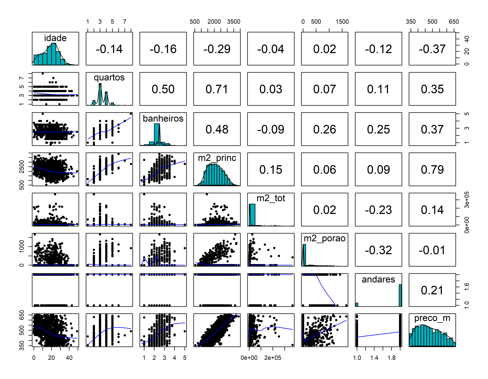
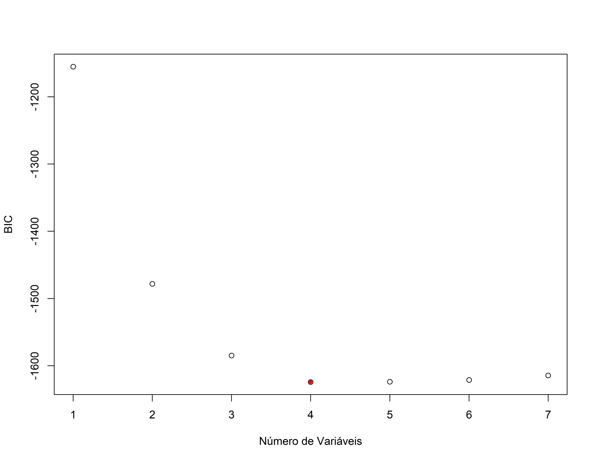

Seleção de Modelos
Carregando Bibliotecas
Carregando os dados
Vendas de casas em Seattle entre 2015 e 2016
#> # A tibble: 6 × 8
#> selling_price home_age bedrooms bathrooms sqft_living sqft_lot sqft_basement
#> <dbl> <dbl> <dbl> <dbl> <dbl> <dbl> <dbl>
#> 1 487000 10 4 2.5 2540 5001 0
#> 2 465000 10 3 2.25 1530 1245 480
#> 3 411000 18 2 2 1130 1148 330
#> 4 635000 4 3 2.5 3350 4007 800
#> 5 380000 24 5 2.5 2130 8428 0
#> 6 495000 21 3 3.5 1650 1577 550
#> # ℹ 1 more variable: floors <dbl>vendas_casa <- vendas_casa %>% rename(preco=selling_price,
idade=home_age,
quartos=bedrooms,
banheiros= bathrooms,
m2_princ=sqft_living,
m2_tot=sqft_lot,
m2_porao=sqft_basement,
andares=floors
)
summary(vendas_casa)#> preco idade quartos banheiros
#> Min. :350000 Min. : 0.00 Min. :1.000 Min. :0.750
#> 1st Qu.:410000 1st Qu.:12.00 1st Qu.:3.000 1st Qu.:2.438
#> Median :470000 Median :19.00 Median :3.000 Median :2.500
#> Mean :479084 Mean :18.53 Mean :3.338 Mean :2.473
#> 3rd Qu.:541625 3rd Qu.:25.00 3rd Qu.:4.000 3rd Qu.:2.500
#> Max. :650000 Max. :49.00 Max. :8.000 Max. :5.000
#> m2_princ m2_tot m2_porao andares
#> Min. : 550 Min. : 600 Min. : 0.0 Min. :1.000
#> 1st Qu.:1640 1st Qu.: 3200 1st Qu.: 0.0 1st Qu.:2.000
#> Median :2060 Median : 5508 Median : 0.0 Median :2.000
#> Mean :2087 Mean : 11891 Mean : 129.7 Mean :1.865
#> 3rd Qu.:2500 3rd Qu.: 8644 3rd Qu.: 122.5 3rd Qu.:2.000
#> Max. :3880 Max. :415126 Max. :1660.0 Max. :2.000Análise Exploratória
library(summarytools)
dfSummary(vendas_casa) |> stview(method = "render")Data Frame Summary
vendas_casa
Dimensions: 1492 x 8Duplicates: 0
| No | Variable | Stats / Values | Freqs (% of Valid) | Graph | Valid | Missing | ||||||||||||||||||||||||||||||||||||||||||||||||||||
|---|---|---|---|---|---|---|---|---|---|---|---|---|---|---|---|---|---|---|---|---|---|---|---|---|---|---|---|---|---|---|---|---|---|---|---|---|---|---|---|---|---|---|---|---|---|---|---|---|---|---|---|---|---|---|---|---|---|---|
| 1 | idade [numeric] |
|
45 distinct values |  |
1492 (100.0%) | 0 (0.0%) | ||||||||||||||||||||||||||||||||||||||||||||||||||||
| 2 | quartos [numeric] |
|
|
 |
1492 (100.0%) | 0 (0.0%) | ||||||||||||||||||||||||||||||||||||||||||||||||||||
| 3 | banheiros [numeric] |
|
14 distinct values |  |
1492 (100.0%) | 0 (0.0%) | ||||||||||||||||||||||||||||||||||||||||||||||||||||
| 4 | m2_princ [numeric] |
|
290 distinct values |  |
1492 (100.0%) | 0 (0.0%) | ||||||||||||||||||||||||||||||||||||||||||||||||||||
| 5 | m2_tot [numeric] |
|
1310 distinct values |  |
1492 (100.0%) | 0 (0.0%) | ||||||||||||||||||||||||||||||||||||||||||||||||||||
| 6 | m2_porao [numeric] |
|
121 distinct values |  |
1492 (100.0%) | 0 (0.0%) | ||||||||||||||||||||||||||||||||||||||||||||||||||||
| 7 | andares [numeric] |
|
|
 |
1492 (100.0%) | 0 (0.0%) | ||||||||||||||||||||||||||||||||||||||||||||||||||||
| 8 | preco_m [numeric] |
|
545 distinct values |  |
1492 (100.0%) | 0 (0.0%) |
Generated by summarytools 1.1.4 (R version 4.5.1)
2025-09-18
vendas_casa %>% select(where(is.numeric)) %>%
summarize(
across(
everything(),
~ var(., na.rm = TRUE))) %>%
pivot_longer(everything(),
names_to = "variavel",
values_to = "variancia")#> # A tibble: 8 × 2
#> variavel variancia
#> <chr> <dbl>
#> 1 idade 81.1
#> 2 quartos 0.633
#> 3 banheiros 0.171
#> 4 m2_princ 332045.
#> 5 m2_tot 794957702.
#> 6 m2_porao 71699.
#> 7 andares 0.117
#> 8 preco_m 6558.Conjunto de teste e treino
#> [1] 1492y <- vendas_casa$preco_m
indice_teste <- createDataPartition(y, times = 1, p = 0.2, list = FALSE)
conj_treino <- vendas_casa[-indice_teste,]
conj_teste <- vendas_casa[indice_teste,]
str(conj_treino)#> tibble [1,192 × 8] (S3: tbl_df/tbl/data.frame)
#> $ idade : num [1:1192] 10 18 4 21 19 24 3 16 20 29 ...
#> $ quartos : num [1:1192] 3 2 3 3 3 2 4 3 3 3 ...
#> $ banheiros: num [1:1192] 2.25 2 2.5 3.5 2.25 1 2.5 2.75 2.75 2.5 ...
#> $ m2_princ : num [1:1192] 1530 1130 3350 1650 1430 1430 2140 2100 2930 1960 ...
#> $ m2_tot : num [1:1192] 1245 1148 4007 1577 4777 ...
#> $ m2_porao : num [1:1192] 480 330 800 550 0 420 0 590 1070 0 ...
#> $ andares : num [1:1192] 2 2 2 2 2 1 2 2 1 2 ...
#> $ preco_m : num [1:1192] 465 411 635 495 355 ...str(conj_teste)#> tibble [300 × 8] (S3: tbl_df/tbl/data.frame)
#> $ idade : num [1:300] 10 24 19 11 3 28 9 17 9 19 ...
#> $ quartos : num [1:300] 4 5 3 4 4 5 3 3 3 3 ...
#> $ banheiros: num [1:300] 2.5 2.5 2 2.5 2.75 3 2.5 3.5 3.5 2.25 ...
#> $ m2_princ : num [1:300] 2540 2130 2190 1920 2360 ...
#> $ m2_tot : num [1:300] 5001 8428 19800 9000 15100 ...
#> $ m2_porao : num [1:300] 0 0 0 0 0 0 0 770 770 145 ...
#> $ andares : num [1:300] 2 2 1 2 1 2 2 2 2 2 ...
#> $ preco_m : num [1:300] 487 380 465 425 535 ...| idade | quartos | banheiros | m2_princ | m2_tot | m2_porao | andares | preco_m |
|---|---|---|---|---|---|---|---|
| 10 | 3 | 2.25 | 1530 | 1245 | 480 | 2 | 465.000 |
| 18 | 2 | 2.00 | 1130 | 1148 | 330 | 2 | 411.000 |
| 4 | 3 | 2.50 | 3350 | 4007 | 800 | 2 | 635.000 |
| 21 | 3 | 3.50 | 1650 | 1577 | 550 | 2 | 495.000 |
| 19 | 3 | 2.25 | 1430 | 4777 | 0 | 2 | 355.000 |
| 24 | 2 | 1.00 | 1430 | 365904 | 420 | 1 | 356.000 |
| 3 | 4 | 2.50 | 2140 | 7245 | 0 | 2 | 495.000 |
| 16 | 3 | 2.75 | 2100 | 10362 | 590 | 2 | 525.000 |
| 20 | 3 | 2.75 | 2930 | 5569 | 1070 | 1 | 559.900 |
| 29 | 3 | 2.50 | 1960 | 8469 | 0 | 2 | 552.321 |
Matriz de correlação
Matriz de dispersão
library(psych)
pairs.panels(conj_treino,
method = "pearson", # metodo de correlação
hist.col = "#00AFBB",
density = TRUE, # mostra graficos de densidade
ellipses = FALSE # mostra elipses de correlação
)
Métodos de seleção de modelo
## Best Subset sem definir o número máx de subsets a ser avaliado
ajusreg.comp <- regsubsets(preco_m ~ ., data=conj_treino)
summary(ajusreg.comp)#> Subset selection object
#> Call: regsubsets.formula(preco_m ~ ., data = conj_treino)
#> 7 Variables (and intercept)
#> Forced in Forced out
#> idade FALSE FALSE
#> quartos FALSE FALSE
#> banheiros FALSE FALSE
#> m2_princ FALSE FALSE
#> m2_tot FALSE FALSE
#> m2_porao FALSE FALSE
#> andares FALSE FALSE
#> 1 subsets of each size up to 7
#> Selection Algorithm: exhaustive
#> idade quartos banheiros m2_princ m2_tot m2_porao andares
#> 1 ( 1 ) " " " " " " "*" " " " " " "
#> 2 ( 1 ) " " "*" " " "*" " " " " " "
#> 3 ( 1 ) " " "*" " " "*" " " " " "*"
#> 4 ( 1 ) "*" "*" " " "*" " " " " "*"
#> 5 ( 1 ) "*" "*" "*" "*" " " " " "*"
#> 6 ( 1 ) "*" "*" "*" "*" "*" " " "*"
#> 7 ( 1 ) "*" "*" "*" "*" "*" "*" "*"Parametros adicionais
Na função regsubsets use adicionalmente os parametros nvmax, que define o número máximo de variáveis explicativas analisadas, e method, que define qual método de seleção de variáveis deverá ser usado.
ajusreg.comp <- regsubsets(preco_m ~ ., data=conj_treino, nvmax=13, method=c("exhaustive"))
sumario.reg <- summary(ajusreg.comp)
sumario.reg#> Subset selection object
#> Call: regsubsets.formula(preco_m ~ ., data = conj_treino, nvmax = 13,
#> method = c("exhaustive"))
#> 7 Variables (and intercept)
#> Forced in Forced out
#> idade FALSE FALSE
#> quartos FALSE FALSE
#> banheiros FALSE FALSE
#> m2_princ FALSE FALSE
#> m2_tot FALSE FALSE
#> m2_porao FALSE FALSE
#> andares FALSE FALSE
#> 1 subsets of each size up to 7
#> Selection Algorithm: exhaustive
#> idade quartos banheiros m2_princ m2_tot m2_porao andares
#> 1 ( 1 ) " " " " " " "*" " " " " " "
#> 2 ( 1 ) " " "*" " " "*" " " " " " "
#> 3 ( 1 ) " " "*" " " "*" " " " " "*"
#> 4 ( 1 ) "*" "*" " " "*" " " " " "*"
#> 5 ( 1 ) "*" "*" "*" "*" " " " " "*"
#> 6 ( 1 ) "*" "*" "*" "*" "*" " " "*"
#> 7 ( 1 ) "*" "*" "*" "*" "*" "*" "*"names(sumario.reg)#> [1] "which" "rsq" "rss" "adjr2" "cp" "bic" "outmat" "obj"Avaliando os modelos com o Cp

Como extrair detalhes do ajuste
Forward Stepwise (passo a passo à frente)
ajusreg.fwd <- regsubsets(preco_m ~ . , data=conj_treino,nvmax=13, method="forward")
sumario.reg.fwd <- summary(ajusreg.fwd)
sumario.reg.fwd #> Subset selection object
#> Call: regsubsets.formula(preco_m ~ ., data = conj_treino, nvmax = 13,
#> method = "forward")
#> 7 Variables (and intercept)
#> Forced in Forced out
#> idade FALSE FALSE
#> quartos FALSE FALSE
#> banheiros FALSE FALSE
#> m2_princ FALSE FALSE
#> m2_tot FALSE FALSE
#> m2_porao FALSE FALSE
#> andares FALSE FALSE
#> 1 subsets of each size up to 7
#> Selection Algorithm: forward
#> idade quartos banheiros m2_princ m2_tot m2_porao andares
#> 1 ( 1 ) " " " " " " "*" " " " " " "
#> 2 ( 1 ) " " "*" " " "*" " " " " " "
#> 3 ( 1 ) " " "*" " " "*" " " " " "*"
#> 4 ( 1 ) "*" "*" " " "*" " " " " "*"
#> 5 ( 1 ) "*" "*" "*" "*" " " " " "*"
#> 6 ( 1 ) "*" "*" "*" "*" "*" " " "*"
#> 7 ( 1 ) "*" "*" "*" "*" "*" "*" "*"plot(sumario.reg.fwd$cp,xlab="Número de Variáveis",ylab="Cp")
points(which.min(sumario.reg.fwd$cp),sumario.reg.fwd$cp[which.min(sumario.reg.fwd$cp)],pch=20,col="red")Como extrair detalhes do ajuste
Backward Stepwise (passo a passo atrás)

Como extrair detalhes do ajuste
Usando o BIC para seleção de variáveis
Aqui voltamos a usar o método exaustivo (best subset selection) que é o mais completo
ajusreg.comp <- regsubsets(preco_m ~ ., data=conj_treino, nvmax=13, method=c("exhaustive"))
sumario.reg <- summary(ajusreg.comp)
sumario.reg#> Subset selection object
#> Call: regsubsets.formula(preco_m ~ ., data = conj_treino, nvmax = 13,
#> method = c("exhaustive"))
#> 7 Variables (and intercept)
#> Forced in Forced out
#> idade FALSE FALSE
#> quartos FALSE FALSE
#> banheiros FALSE FALSE
#> m2_princ FALSE FALSE
#> m2_tot FALSE FALSE
#> m2_porao FALSE FALSE
#> andares FALSE FALSE
#> 1 subsets of each size up to 7
#> Selection Algorithm: exhaustive
#> idade quartos banheiros m2_princ m2_tot m2_porao andares
#> 1 ( 1 ) " " " " " " "*" " " " " " "
#> 2 ( 1 ) " " "*" " " "*" " " " " " "
#> 3 ( 1 ) " " "*" " " "*" " " " " "*"
#> 4 ( 1 ) "*" "*" " " "*" " " " " "*"
#> 5 ( 1 ) "*" "*" "*" "*" " " " " "*"
#> 6 ( 1 ) "*" "*" "*" "*" "*" " " "*"
#> 7 ( 1 ) "*" "*" "*" "*" "*" "*" "*"names(sumario.reg)#> [1] "which" "rsq" "rss" "adjr2" "cp" "bic" "outmat" "obj"plot(sumario.reg$bic,xlab="Número de Variáveis",ylab="BIC")
points(which.min(sumario.reg$bic),sumario.reg$bic[which.min(sumario.reg$bic)],pch=20,col="red")
#> (Intercept) idade quartos m2_princ andares
#> 269.5362098 -0.9457714 -43.3967857 0.1469077 35.2705008Veja que o BIC apresentou um modelo mais enxuto
Revendo o resultado com o Cp
plot(sumario.reg$cp,xlab="Número de Variáveis",ylab="Cp")
points(which.min(sumario.reg$cp),sumario.reg$cp[which.min(sumario.reg$cp)],pch=20,col="red")
#> (Intercept) idade quartos banheiros m2_princ
#> 2.551855e+02 -9.302566e-01 -4.456961e+01 9.461555e+00 1.441541e-01
#> m2_tot andares
#> 9.183278e-05 3.486187e+01Comparando os dois modelos com o lm()
## Usando o lm para ajustar o modelo com as variáveis selecionadas pelo BIC
mod_bic <- lm(preco_m ~ idade + quartos + m2_princ + andares, data=conj_treino)
summary(mod_bic)#>
#> Call:
#> lm(formula = preco_m ~ idade + quartos + m2_princ + andares,
#> data = conj_treino)
#>
#> Residuals:
#> Min 1Q Median 3Q Max
#> -91.569 -31.680 -1.459 34.349 95.522
#>
#> Coefficients:
#> Estimate Std. Error t value Pr(>|t|)
#> (Intercept) 269.536210 8.833668 30.512 < 2e-16 ***
#> idade -0.945771 0.137707 -6.868 1.05e-11 ***
#> quartos -43.396786 2.103100 -20.635 < 2e-16 ***
#> m2_princ 0.146908 0.002991 49.120 < 2e-16 ***
#> andares 35.270501 3.431146 10.280 < 2e-16 ***
#> ---
#> Signif. codes: 0 '***' 0.001 '**' 0.01 '*' 0.05 '.' 0.1 ' ' 1
#>
#> Residual standard error: 40.6 on 1187 degrees of freedom
#> Multiple R-squared: 0.7515, Adjusted R-squared: 0.7507
#> F-statistic: 897.4 on 4 and 1187 DF, p-value: < 2.2e-16mod_cp <- lm(preco_m ~ idade + quartos + banheiros + m2_princ + m2_tot + andares, data=conj_treino)
summary(mod_cp)#>
#> Call:
#> lm(formula = preco_m ~ idade + quartos + banheiros + m2_princ +
#> m2_tot + andares, data = conj_treino)
#>
#> Residuals:
#> Min 1Q Median 3Q Max
#> -90.680 -31.815 -0.952 33.701 94.047
#>
#> Coefficients:
#> Estimate Std. Error t value Pr(>|t|)
#> (Intercept) 2.552e+02 9.834e+00 25.949 < 2e-16 ***
#> idade -9.303e-01 1.373e-01 -6.777 1.93e-11 ***
#> quartos -4.457e+01 2.173e+00 -20.513 < 2e-16 ***
#> banheiros 9.462e+00 3.367e+00 2.810 0.00503 **
#> m2_princ 1.442e-01 3.095e-03 46.574 < 2e-16 ***
#> m2_tot 9.183e-05 4.410e-05 2.083 0.03750 *
#> andares 3.486e+01 3.587e+00 9.718 < 2e-16 ***
#> ---
#> Signif. codes: 0 '***' 0.001 '**' 0.01 '*' 0.05 '.' 0.1 ' ' 1
#>
#> Residual standard error: 40.44 on 1185 degrees of freedom
#> Multiple R-squared: 0.7538, Adjusted R-squared: 0.7525
#> F-statistic: 604.6 on 6 and 1185 DF, p-value: < 2.2e-16Em termos de ajuste praticamente não há diferença nos resultados, sendo que o modelo obtido usando o BIC é bem mais enxuto. A parcimoniosidade é sempre bem vinda, mas é necessário ver como ficam os resultados com o conjunto de testes.
Avaliando Colinearidade
Uma investigação minuciosa da multicollinearidade envolverá a análise do valor do \(R^2\) que resulta da regressão de cada uma das variáveis explicativas contra todas as outras. A relação entre as variáveis explicativas pode ser julgada examinando uma quantidade chamada fator de inflacionário da variância (FIV) ou Variance Inflation Factor (VIF). Seja \(Rj~^{2}\) o quadrado do coeficiente de correlação múltipla que resulta quando a variável explicativa \(Xj~\) é ajustada contra todas as outras variáveis explicativas. Então o vif para \(Xj~\) é \(VIFj = 1 / (1-Rj~^{2})\)
A regra geral é que vifs superiores a 4 justificam novas investigações, enquanto VIFs superiores a 10 são sinais de multicollinearidade grave que requerem correção.
Testando os dois modelos com o conjunto de teste
# Modelo com base no Cp
summary(mod_cp)$sigma#> [1] 40.44459summary(mod_cp)$adj.r.squared#> [1] 0.7525384#> [1] 41.50369# Modelo com base no BIC
summary(mod_bic)$sigma#> [1] 40.59764summary(mod_bic)$adj.r.squared#> [1] 0.750662#> [1] 41.56818Aqui vemos que as diferença de resultados entre os dois modelos é muito pequena, mas o modelo com base no BIC é mais parcimonioso, então vamos usá-lo para fazer a previsão.
Comparando valor real vs previsão (conjunto de treino)
conj_treino$Previsoes <- predict(mod_bic, conj_treino)
ggplot(conj_treino, aes(x=Previsoes, y=preco_m)) +
geom_point() +
geom_abline(color = "darkblue") +
ggtitle("Preço da Casa vs. Previsões do modelo linear")O modelo está tendendo dar previsões mais altas nas casas com menor preço e previsões mais baixas nas casas com maior preço. Tem duas previsões estão mais afastadas da reta Y = X. Vamos identificar estes pontos.
conj_treino$Previsoes <- predict(mod_bic, conj_treino)
ggplot(conj_treino, aes(x=Previsoes, y=preco_m)) +
geom_point() +
geom_abline(color = "darkblue") +
ggtitle("Preço da Casa vs. Previsões do modelo linear") +
geom_text(aes(label=ifelse(Previsoes > 670, rownames(conj_treino), '')), hjust=0, vjust=-0.5)conj_treino[c(3, 704), ]#> # A tibble: 2 × 9
#> idade quartos banheiros m2_princ m2_tot m2_porao andares preco_m Previsoes
#> <dbl> <dbl> <dbl> <dbl> <dbl> <dbl> <dbl> <dbl> <dbl>
#> 1 4 3 2.5 3350 4007 800 2 635 698.
#> 2 1 3 2.5 3610 26359 1660 1 635 704.Comparando valor real vs previsão (conjunto de teste)
conj_teste$Previsoes <- predict(mod_bic, conj_teste)
ggplot(conj_teste, aes(x=Previsoes, y=preco_m)) +
geom_point() +
geom_abline(color = "darkblue") +
ggtitle("Preço da Casa vs. Previsões do modelo linear")Avaliando os resíduos
residualPlots(mod_bic)
#> Test stat Pr(>|Test stat|)
#> idade -0.6066 0.5443
#> quartos 0.6446 0.5193
#> m2_princ 0.4534 0.6504
#> andares 0.9874 0.3236
#> Tukey test 0.6214 0.5343influencePlot(mod_bic)#> StudRes Hat CookD
#> 255 2.3601793 0.002345386 0.002609066
#> 561 0.5579794 0.023405542 0.001493217
#> 704 -1.7199510 0.021700032 0.013101910
#> 1115 2.4051510 0.045324181 0.054706842